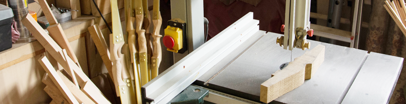

условия работы и доставки
доставка в любую точку планеты и за ее пределы
Прямой лук – самая простая форма лука. Плавно утоньшающееся от рукояти к концам плечей древко, стянутое тетивой. Его достоинство в простоте изготовления и стабильности выстрела. POS-материалы (POS materials, POS — point of sales — место продажи) — это материалы, способствующие продвижению бренда или товара в местах продаж (шелфтокеры, ценникодержатели, воблеры, ценники, стопперы, промостойки, диспенсеры, пластиковые лотки, флажки, упаковка, выкраска, наклейки, декоративные магниты и подобное.